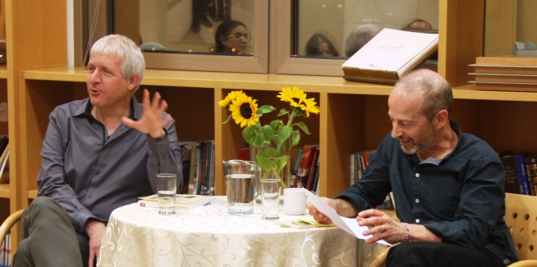

בפתיחת המפגש, שהתקיים במרכז מנדל למנהיגות בנגב, הציג חבר סגל המרכז ד"ר יצחק (קיקי) אהרונוביץ את פרופ' וולפסון והקריא כמה שירים מספרו. בספר שירים בשלוש שפות: עברית, ערבית ואנגלית, אשר מחדדים את נושא הסביבה והמאבק לשמירתה במרחב משותף שבו מתקיימות שפות שונות ותרבויות שונות. בהמשך הוקרא שיר מהספר גם בשפה הערבית, מפיו של סאלח אבו ג'עפר, בוגר תוכנית מנדל למנהיגות מקומית ברהט א'. שירים אלו היו כר פורה לדיון במצב האקולוגי-סביבתי בישראל, ובאזור הנגב בפרט. השיח במפגש נגע בפער שבין התוכניות העתידיות לקידום התחום האקולוגי בישראל ובאזור ובין המצב הקיים בפועל, וכן במודעות ובאי-מודעות הציבור לכוח ההשפעה שלו ולכוחו של המשרד להגנת הסביבה לפעול בנושא.
פרופ' וולפסון הדגיש את כוחה של התרבות ואת יכולתה לתרום למאבק האקולוגי – תרבות שיתופית של סביבה שבה קיים שיח במרחב הציבורי, יכולת מנהיגותית להניע לפעולה והובלה לשינויי הרגלים. הוא הזכיר את המונח "הטוב המשותף" – חשיבה מורכבת מעבר לעצמי, ל"כאן ועכשיו", ומבט כוללני המאפשר פעילות משותפת למטרת שינוי ולטובת הקבוצה. וולפסון סיכם את דבריו בכך שהוא מאמין בכוחה של המנהיגות ליצור שינוי נרחב בתחום האקולוגי, וכי לאנשים היכולת לפעול במציאות אם יקבלו את ההחלטה לעשות כן.
בסיום המפגש התייחס ד"ר יצחק (קיקי) אהרונוביץ' לכתביו של וולפסון והדגיש את כוחה של המילה בעיצוב התנהגות והנעה לפעולה. הוא ציין שהדיון בנושא "הטוב המשותף" עורר את ההבחנה החברתית הקיימת אצל האוכלוסייה על "גבולות הבית" – מה אדם רואה כביתו וכגבול שלו, וכן עמד על שם הספר כמושג של בית במובנו הרחב, על הנחלה שהוא מייצג ועל הנכסים הקיימים בו.

{kind=link}